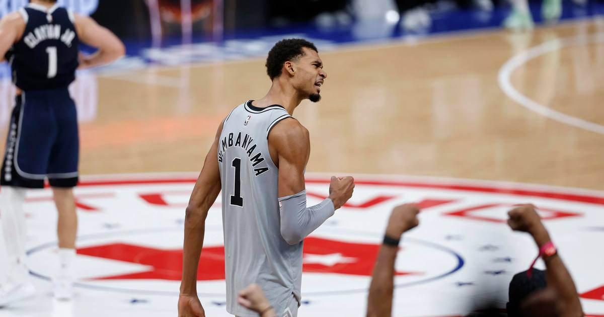

Wembanyama's 52 points, 24 rebounds lift Spurs past Mavericks
Victor Wembanyama dropped a career-high 52 points with 24 rebounds and 8 blocks, sinking the deciding free throw with 24.2 seconds left as the Spurs edged the Mavericks 112-111 for their sixth straight win.

Disclosure: this post contains affiliate links. I earn a commission on qualifying purchases.
What happened
The San Antonio Spurs edged the Dallas Mavericks 112-111 on November 4, and the entire night belonged to Victor Wembanyama.
Wembanyama finished with 52 points, 24 rebounds, and 8 blocks — a line that reads like a misprint and still somehow undersells how much of the game ran through him.
The deciding moment
With 24.2 seconds left and the game hanging in the balance, Wembanyama stepped to the line and sank the deciding free throw to put San Antonio back on top. One point was all the margin the Spurs needed.
A historic half
Wembanyama did not wait until the fourth quarter to make history. He became the first player in 30 seasons to record at least 25 points, 10 rebounds, and five blocks in a single half.
That is the kind of first-half line that usually takes a player a full game to reach. Wembanyama did it in one half, against a division rival, in a game his team went on to win by a single point.
Why this one is historic
The full line is where it gets absurd. Wembanyama is the first player in 52 years to put up at least 50 points, 20 rebounds, and 5 blocks in a game. The last man to do it was Bob McAdoo in 1974 — 52 points, 22 rebounds, 7 blocks.
Since the NBA started officially tracking blocks in the 1973-74 season, exactly two players have ever posted a 50-20-5 game: McAdoo and Wembanyama. Wilt Chamberlain did the 50-20 part at least five times, but all of those came before blocks were an official stat, so his lines can't be measured the same way. Wembanyama's 8 blocks are also the most by any player in a 50-point game since tracking began, and his 24 rebounds are the most in a 50-point game since Chris Webber went for 51 and 26 in 2001. He is the first Spur in franchise history with a 50-20 game.
And he did it while sick. Wembanyama said after the game that he had been battling a virus — "I haven't been feeling great lately. I've been sick for a while. And today, I felt like I got my legs back, so it should be more like this more often." He had scored just 12 in the previous game against Utah, then rolled his right ankle with 9:11 left in the fourth against Dallas, briefly left the game, and still came back to close it out. His own read on the night: he doesn't think he's playing his best yet.
The box score
Points: 52
Rebounds: 24
Blocks: 8
Final score: Spurs 112, Mavericks 111
Spurs win streak: 6 straight
What it means
The win is San Antonio's sixth straight, and it came the hard way — a one-point margin decided at the free-throw line in the final half-minute. Nights like this one are why the Spurs' streak feels real rather than lucky: when the game tightens, they have a player who can take over both ends of the floor and close it out.
Watch
Source: MAVERICKS at SPURS | FULL GAME HIGHLIGHTS | November 4, 2026 — NBA. The official full-game highlights of San Antonio's 112-111 win, including Wembanyama's 52 points, 24 rebounds, and 8 blocks.
Sources
• Spurs edge Mavs behind Victor Wembanyama's 52 and 24 (Reuters)
• Victor Wembanyama is still ascending and it's terrifying (USA Today)
• Victor Wembanyama Joins Elite Company With Historic Performance in Spurs Win (Sports Illustrated)
• Wemby draws MVP chants with career performance vs. Mavs (TSN)
Gear up: Fanatics